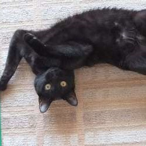
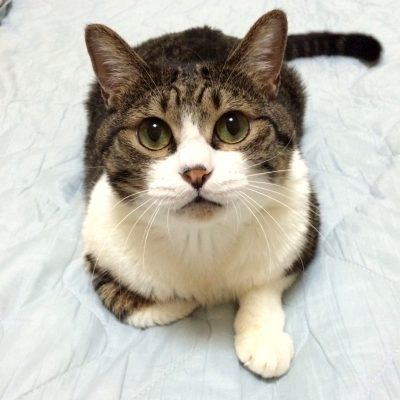

猫さんは1日20時間近く睡眠を取ると言われています。また夜行性ですので、お昼の時間帯は寝ていることも多いのですが、起きている時はお膝に乗ってくれたり、猫じゃらしにじゃれたりとかわいい姿を見せてくれます。睡眠時間の長い猫さんは自分のにおいのついた自分のベッドがあることによって安心し、ストレスの軽減にもなっております。そのような猫さんの習性を理解して、猫さんのいる空間を楽しんで頂けたらと思います。ご理解のほど、よろしくお願い致します。

雑種
2018年11月30日生
ランちゃんは小柄ですが１１月で６歳を迎えるヤンチャな女の子☆食欲旺盛！元気いっぱい！

日本猫
2007年12月24日生
下の子の面倒をよく見てくれ皆から男の子だけど、お母さんだと思われているんですよ☆ 見てるとほのぼのして癒されますよ。